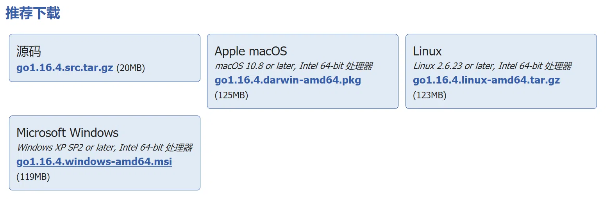

下载安装包
访问https://studygolang.com/dl下载对应系统的安装包，这里以windows平台为例。

安装
安装下载后的安装文件。
使用推荐的默认设置就可以了。
增加环境变量
在系统环境变量PATH中添加go的安装路径，比如C:\Program Files\Go\bin。
添加完成后调出cmd输入go version有下面的显示说明安装成功了。
1 | C:\Users\espho>go version |
设置代理
设置为国内代理，方便下载go模块：
1 | 阿里云 |
设置方式：
1 | go env -w GO111MODULE=on |
运行go env查看设置是否成功。